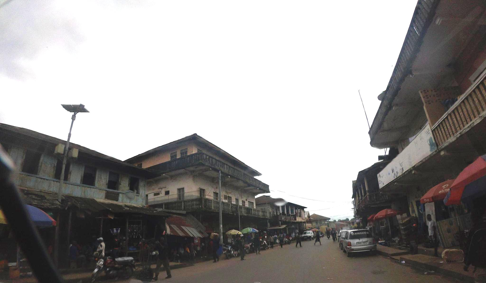

Joseph Rinno Kanu
About Me
My name is Joseph Rinno Kanu, and I am a Computer Science student from Makeni, Sierra Leone. I am studying Computer Science at the University of Makeni while also continuing my studies in Software Development. I enjoy learning programming, web development, and other areas of technology.
Makeni, Sierra Leone

Makeni is a city in northern Sierra Leone and is an important educational and commercial center. It is home to the University of Makeni and is a place I am proud to call home.